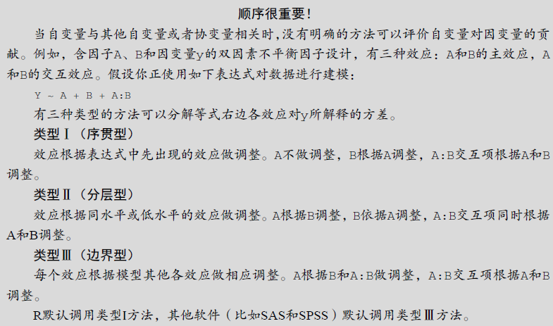

15 R语言方差分析注意事项
R语言做方差分析很简单，就是一个函数aov()，包括但不限于单因素方差分析、多因素方差分析、协方差分析、重复测量方差分析等，都是这个函数。
R语言做方差分析和SPSS/SAS等传统统计软件不太一样，下面说一下需要注意的地方，主要是2个点：
- 3种类型的方差分析
- 单因素协方差分析和随机区组方差分析的区别
15.1 均衡设计和非均衡设计
均衡设计是指不同组别之间的样本量相等，非均衡设计自然就是指不同组别之间样本量不相同。
医学研究中大部分都是均衡设计。
15.2 方差分析的3种类型
在计算方差分析中的平方和时，有3种类型（你可以简单理解为方差分析有3种类型），SPSS/SAS在做方差分析的时候，默认是类型Ⅲ，但是R语言中的aov()函数做方差分析时，默认是类型Ⅰ。
R语言中做方差分析是用公式表示的，比如：aov(y ~ A + B + A:B, data = df)。
表达式中效应的顺序在两种情况下会造成影响：(a)因子不止一个，并且是非平衡设计；(b)存在协变量。出现任意一种情况时，等式右边的变量都与其他每个变量相关。此时，我们无法清晰地划分它们对因变量的影响。一般来说，越基础性的效应越需要放在表达式前面。具体来讲，首先是协变量，然后是主效应，接着是双因素的交互项，再接着是三因素的交互项，以此类推。对于主效应，越基础性的变量越应放在表达式前面，因此性别要放在处理方式之前。有一个基本的准则：若研究设计不是正交的（也就是说，因子和/或协变量相关），一定要谨慎设置效应的顺序。–《R语言实战》
也就是说：
- 如果是均衡设计，3种类型的方差分析没有差别，这也是为什么之前的演示全都和SPSS结果一样的原因！
- 如果是非均衡设计，但是只存在组别因素（比如完全随机设计的方差分析），结果也是没有差别的！
- 如果是非均衡设计并且有多个因素，或者存在协变量时，3种类型方差分析的结果是不一样的！
3种类型的区别可以参考下面这张图：
R语言的aov()函数不能更改类型，但是我们通过其他R包实现更改类型。比如car::Anova()或者rstatix包。
15.3 示例
使用3个简单的小例子进行演示。
15.3.1 示例一
首先是一个单因素均衡设计的例子，来自课本例4-2。
trt<-c(rep("group1",30),rep("group2",30),rep("group3",30),rep("group4",30))
weight<-c(3.53,4.59,4.34,2.66,3.59,3.13,3.30,4.04,3.53,3.56,3.85,4.07,1.37,
3.93,2.33,2.98,4.00,3.55,2.64,2.56,3.50,3.25,2.96,4.30,3.52,3.93,
4.19,2.96,4.16,2.59,2.42,3.36,4.32,2.34,2.68,2.95,2.36,2.56,2.52,
2.27,2.98,3.72,2.65,2.22,2.90,1.98,2.63,2.86,2.93,2.17,2.72,1.56,
3.11,1.81,1.77,2.80,3.57,2.97,4.02,2.31,2.86,2.28,2.39,2.28,2.48,
2.28,3.48,2.42,2.41,2.66,3.29,2.70,2.66,3.68,2.65,2.66,2.32,2.61,
3.64,2.58,3.65,3.21,2.23,2.32,2.68,3.04,2.81,3.02,1.97,1.68,0.89,
1.06,1.08,1.27,1.63,1.89,1.31,2.51,1.88,1.41,3.19,1.92,0.94,2.11,
2.81,1.98,1.74,2.16,3.37,2.97,1.69,1.19,2.17,2.28,1.72,2.47,1.02,
2.52,2.10,3.71)
df <- data.frame(trt,weight)
str(df)
## 'data.frame': 120 obs. of 2 variables:
## $ trt : chr "group1" "group1" "group1" "group1" ...
## $ weight: num 3.53 4.59 4.34 2.66 3.59 3.13 3.3 4.04 3.53 3.56 ...R语言中的方差分析结果比较：
# 1型
fit <- aov(weight ~ trt, data = df)
summary(fit)
## Df Sum Sq Mean Sq F value Pr(>F)
## trt 3 32.16 10.719 24.88 1.67e-12 ***
## Residuals 116 49.97 0.431
## ---
## Signif. codes: 0 '***' 0.001 '**' 0.01 '*' 0.05 '.' 0.1 ' ' 1
# 2型
car::Anova(fit, type=2)
## Anova Table (Type II tests)
##
## Response: weight
## Sum Sq Df F value Pr(>F)
## trt 32.156 3 24.884 1.674e-12 ***
## Residuals 49.967 116
## ---
## Signif. codes: 0 '***' 0.001 '**' 0.01 '*' 0.05 '.' 0.1 ' ' 1
# 3型
car::Anova(fit, type=3)
## Anova Table (Type III tests)
##
## Response: weight
## Sum Sq Df F value Pr(>F)
## (Intercept) 353.02 1 819.537 < 2.2e-16 ***
## trt 32.16 3 24.884 1.674e-12 ***
## Residuals 49.97 116
## ---
## Signif. codes: 0 '***' 0.001 '**' 0.01 '*' 0.05 '.' 0.1 ' ' 1可以看到3种类型的结果是完全一样的，没有差别~
下面我们更改一下样本数量，使其变成非均衡设计：
# 每组样本数量改一下
trt<-c(rep("group1",10),rep("group2",50),rep("group3",35),rep("group4",25))
weight<-c(3.53,4.59,4.34,2.66,3.59,3.13,3.30,4.04,3.53,3.56,3.85,4.07,1.37,
3.93,2.33,2.98,4.00,3.55,2.64,2.56,3.50,3.25,2.96,4.30,3.52,3.93,
4.19,2.96,4.16,2.59,2.42,3.36,4.32,2.34,2.68,2.95,2.36,2.56,2.52,
2.27,2.98,3.72,2.65,2.22,2.90,1.98,2.63,2.86,2.93,2.17,2.72,1.56,
3.11,1.81,1.77,2.80,3.57,2.97,4.02,2.31,2.86,2.28,2.39,2.28,2.48,
2.28,3.48,2.42,2.41,2.66,3.29,2.70,2.66,3.68,2.65,2.66,2.32,2.61,
3.64,2.58,3.65,3.21,2.23,2.32,2.68,3.04,2.81,3.02,1.97,1.68,0.89,
1.06,1.08,1.27,1.63,1.89,1.31,2.51,1.88,1.41,3.19,1.92,0.94,2.11,
2.81,1.98,1.74,2.16,3.37,2.97,1.69,1.19,2.17,2.28,1.72,2.47,1.02,
2.52,2.10,3.71)
df1 <- data.frame(trt,weight)然后再来看一下3种类型方差分析的结果：
# 1型
fit1 <- aov(weight ~ trt, data = df1)
summary(fit1)
## Df Sum Sq Mean Sq F value Pr(>F)
## trt 3 22.03 7.343 14.17 6.23e-08 ***
## Residuals 116 60.09 0.518
## ---
## Signif. codes: 0 '***' 0.001 '**' 0.01 '*' 0.05 '.' 0.1 ' ' 1
# 2型
car::Anova(fit1, type = 2)
## Anova Table (Type II tests)
##
## Response: weight
## Sum Sq Df F value Pr(>F)
## trt 22.029 3 14.174 6.228e-08 ***
## Residuals 60.094 116
## ---
## Signif. codes: 0 '***' 0.001 '**' 0.01 '*' 0.05 '.' 0.1 ' ' 1
# 3型
car::Anova(fit1, type = 3)
## Anova Table (Type III tests)
##
## Response: weight
## Sum Sq Df F value Pr(>F)
## (Intercept) 131.551 1 253.933 < 2.2e-16 ***
## trt 22.029 3 14.174 6.228e-08 ***
## Residuals 60.094 116
## ---
## Signif. codes: 0 '***' 0.001 '**' 0.01 '*' 0.05 '.' 0.1 ' ' 1可以看到3种类型的结果也是一样的哦！
15.3.2 示例二
使用一个随机区组设计的方差分析进行演示，示例数据来自课本例4-3的数据。
首先也是均衡设计的情况：
weight <- c(0.82,0.65,0.51,0.73,0.54,0.23,0.43,0.34,0.28,0.41,0.21,
0.31,0.68,0.43,0.24)
block <- c(rep(c("1","2","3","4","5"),each=3))
group <- c(rep(c("A","B","C"),5))
data4_4 <- data.frame(weight,block,group)
str(data4_4)
## 'data.frame': 15 obs. of 3 variables:
## $ weight: num 0.82 0.65 0.51 0.73 0.54 0.23 0.43 0.34 0.28 0.41 ...
## $ block : chr "1" "1" "1" "2" ...
## $ group : chr "A" "B" "C" "A" ...下面是3种类型方差分析的结果，由于是均衡设计，3种类型没有任何区别，并且即使你把区组因素和分组因素的位置互换，也不会有任何差别哦！
# 1型
fit <- aov(weight ~ block + group, data = data4_4)
summary(fit)
## Df Sum Sq Mean Sq F value Pr(>F)
## block 4 0.2284 0.05709 5.978 0.01579 *
## group 2 0.2280 0.11400 11.937 0.00397 **
## Residuals 8 0.0764 0.00955
## ---
## Signif. codes: 0 '***' 0.001 '**' 0.01 '*' 0.05 '.' 0.1 ' ' 1
# 2型
car::Anova(fit, type = 2)
## Anova Table (Type II tests)
##
## Response: weight
## Sum Sq Df F value Pr(>F)
## block 0.22836 4 5.978 0.015787 *
## group 0.22800 2 11.937 0.003968 **
## Residuals 0.07640 8
## ---
## Signif. codes: 0 '***' 0.001 '**' 0.01 '*' 0.05 '.' 0.1 ' ' 1
# 3型
car::Anova(fit, type = 3)
## Anova Table (Type III tests)
##
## Response: weight
## Sum Sq Df F value Pr(>F)
## (Intercept) 1.44086 1 150.875 1.794e-06 ***
## block 0.22836 4 5.978 0.015787 *
## group 0.22800 2 11.937 0.003968 **
## Residuals 0.07640 8
## ---
## Signif. codes: 0 '***' 0.001 '**' 0.01 '*' 0.05 '.' 0.1 ' ' 1下面给它改成非均衡设计：
weight <- c(0.82,0.65,0.51,0.73,0.54,0.23,0.43,0.34,0.28,0.41,0.21,
0.31,0.68,0.43,0.24)
block <- c(rep(c("1","2","3","4","5"),each=3))
# 每组样本量不一样
group <- c(rep(c("A"),2),rep("B",9),rep("C",4))
data4_4 <- data.frame(weight,block,group)下面再看一下3种类型方差分析的结果：
# 1型
fit1 <- aov(weight ~ block + group, data = data4_4)
summary(fit)
## Df Sum Sq Mean Sq F value Pr(>F)
## block 4 0.2284 0.05709 5.978 0.01579 *
## group 2 0.2280 0.11400 11.937 0.00397 **
## Residuals 8 0.0764 0.00955
## ---
## Signif. codes: 0 '***' 0.001 '**' 0.01 '*' 0.05 '.' 0.1 ' ' 1
# 2型
car::Anova(fit1, type = 2)
## Anova Table (Type II tests)
##
## Response: weight
## Sum Sq Df F value Pr(>F)
## block 0.079789 4 0.5896 0.6798
## group 0.033750 2 0.4988 0.6250
## Residuals 0.270650 8
# 3型
car::Anova(fit1, type = 3)
## Anova Table (Type III tests)
##
## Response: weight
## Sum Sq Df F value Pr(>F)
## (Intercept) 1.08045 1 31.9364 0.0004807 ***
## block 0.07979 4 0.5896 0.6798021
## group 0.03375 2 0.4988 0.6249619
## Residuals 0.27065 8
## ---
## Signif. codes: 0 '***' 0.001 '**' 0.01 '*' 0.05 '.' 0.1 ' ' 1可以看到结果完全不一样了哦！
15.3.3 协方差分析
就用一个简单的完全随机设计资料的协方差分析进行演示，示例数据来自课本例13-1。
df13_1 <- data.frame(x1=c(10.8,11.6,10.6,9.0,11.2,9.9,10.6,10.4,9.6,10.5,
10.6,9.9,9.5,9.7,10.7,9.2,10.5,11.0,10.1,10.7,8.5,10.0,
10.4,9.7,9.4,9.2,10.5,11.2,9.6,8.0),
y1=c(9.4,9.7,8.7,7.2,10.0,8.5,8.3,8.1,8.5,9.1,9.2,8.4,
7.6,7.9,8.8,7.4,8.6,9.2,8.0,8.5,7.3,
8.3,8.6,8.7,7.6,8.0,8.8,9.5,8.2,7.2),
x2=c(10.4,9.7,9.9,9.8,11.1,8.2,8.8,10.0,9.0,9.4,
8.9,10.3,9.3,9.2,10.9,9.2,9.2,10.4,11.2,
11.1,11.0,8.6,9.3,10.3,10.3,9.8,10.5,10.7,10.4,9.4),
y2=c(9.2,9.1,8.9,8.6,9.9,7.1,7.8,7.9,8.0,9.0,7.9,8.9,
8.9,8.1,10.2,8.5,9.0,8.9,9.8,10.1,8.5,
8.1,8.6,8.9,9.6,8.1,9.9,9.3,8.7,8.7),
x3=c(9.8,11.2,10.7,9.6,10.1,9.8,10.1,10.3,11.0,10.5,9.2,
10.1,10.4,10.0,8.4,10.1,9.3,10.5,11.1,10.5,
9.7,9.2,9.3,10.4,10.0,10.3,9.9,9.4,8.3,9.2),
y3=c(7.6,7.9,9.0,7.8,8.5,7.5,8.3,8.2,8.4,8.1,7.0,7.7,8.0,
6.6,6.1,8.1,7.8,8.4,8.2,8.0,7.6,6.9,
6.7,8.1,7.4,8.2,7.6,7.8,6.6,7.2)
)
suppressPackageStartupMessages(library(tidyverse))
df13_11 <- df13_1 %>%
pivot_longer(cols = everything(), # 变长
names_to = c(".value","group"),
names_pattern = "(.)(.)"
) %>%
mutate(group = as.factor(group)) # 组别变为因子型
glimpse(df13_11)
## Rows: 90
## Columns: 3
## $ group <fct> 1, 2, 3, 1, 2, 3, 1, 2, 3, 1, 2, 3, 1, 2, 3, 1, 2, 3, 1, 2, 3, 1…
## $ x <dbl> 10.8, 10.4, 9.8, 11.6, 9.7, 11.2, 10.6, 9.9, 10.7, 9.0, 9.8, 9.6…
## $ y <dbl> 9.4, 9.2, 7.6, 9.7, 9.1, 7.9, 8.7, 8.9, 9.0, 7.2, 8.6, 7.8, 10.0…group是分组因素，x是协变量，y是因变量。
下面进行3种类型的协方差分析：
# 1型
fit <- aov(y ~ x + group, data = df13_11)
summary(fit)
## Df Sum Sq Mean Sq F value Pr(>F)
## x 1 29.06 29.057 171.20 <2e-16 ***
## group 2 19.85 9.925 58.48 <2e-16 ***
## Residuals 86 14.60 0.170
## ---
## Signif. codes: 0 '***' 0.001 '**' 0.01 '*' 0.05 '.' 0.1 ' ' 1
# 2型
car::Anova(fit, type = 2)
## Anova Table (Type II tests)
##
## Response: y
## Sum Sq Df F value Pr(>F)
## x 30.183 1 177.83 < 2.2e-16 ***
## group 19.851 2 58.48 < 2.2e-16 ***
## Residuals 14.596 86
## ---
## Signif. codes: 0 '***' 0.001 '**' 0.01 '*' 0.05 '.' 0.1 ' ' 1
# 3型
car::Anova(fit, type = 3)
## Anova Table (Type III tests)
##
## Response: y
## Sum Sq Df F value Pr(>F)
## (Intercept) 0.3818 1 2.2493 0.1373
## x 30.1830 1 177.8346 <2e-16 ***
## group 19.8510 2 58.4798 <2e-16 ***
## Residuals 14.5963 86
## ---
## Signif. codes: 0 '***' 0.001 '**' 0.01 '*' 0.05 '.' 0.1 ' ' 1可以看到在有协变量的情况下，即使是均衡设计，1型和2型、3型之间的平方和及F值也是有差异的。
如果你很细心，你可能会发现R中进行单因素协方差分析（ANCOVA）的公式写法和随机区组的anova一模一样！那R语言怎么知道我们是要进行ancova还是随机区组的anova呢？
很简单，在这里x作为协变量，是数值型，所以R默认会进行ancova，如果是因子型或者字符型，R会默认进行随机区组的anova，比如上面那个随机区组的例子！你会不会觉得这种识别方法过于粗糙了？还真不是，因为协方差分析的应用条件中也有规定：
协方差分析要求协变量是连续变量，而且不能是影响处理的变量。–《医学统计学》P201
所以，一切规定，皆有缘由，都是细节！